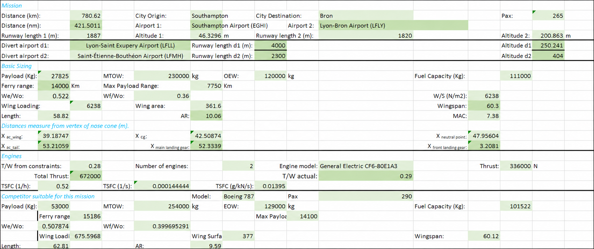
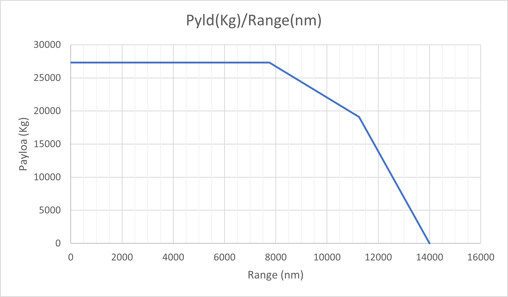
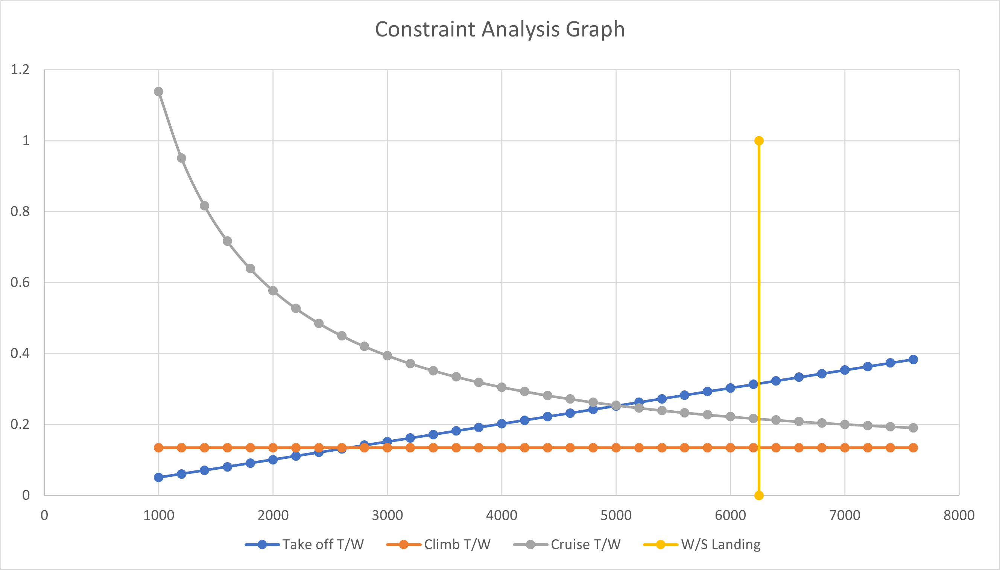
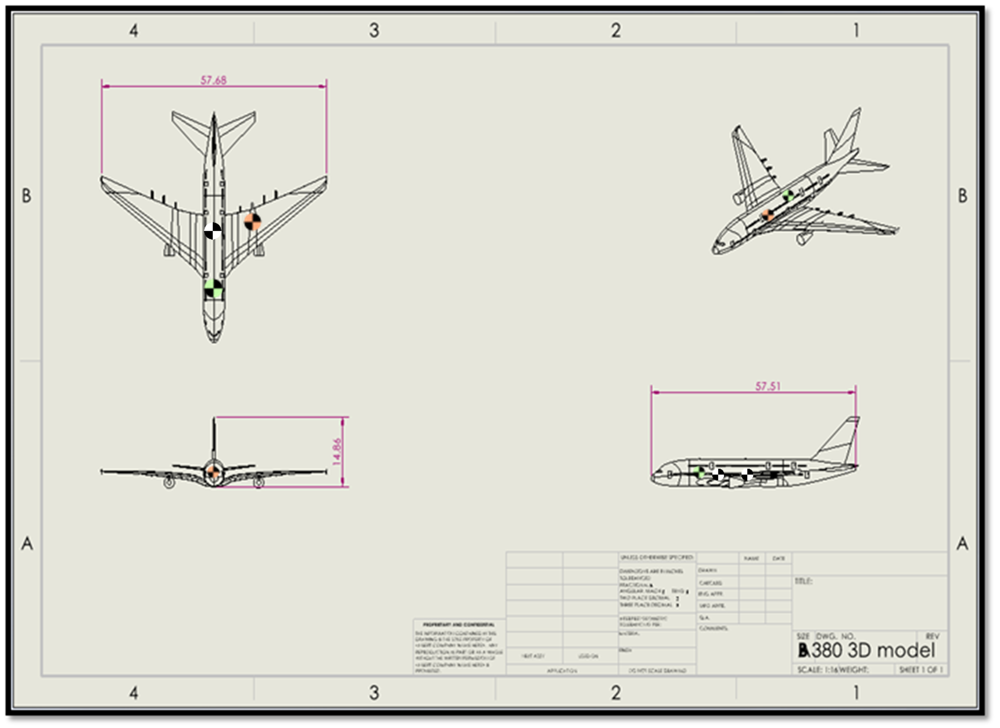
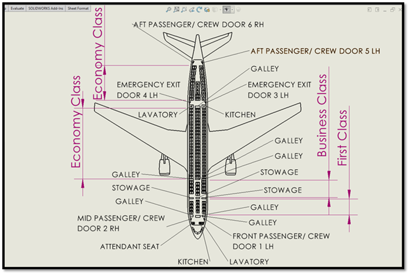

Aircraft Design and Stability Mission Analysis
A conceptual aircraft design and stability project for a civil transport mission between Southampton and Lyon-Bron. The work combined mission planning, payload-range analysis, constraint analysis, aerodynamic stability calculations, cabin layout considerations, and aircraft configuration selection.
Project Overview
This project focused on designing and analysing a wide-body twin-engine civil transport aircraft mission. The aircraft was assessed against runway constraints, payload requirements, cruise conditions, fuel assumptions, and safety considerations for a route from Southampton Airport to Lyon-Bron Airport with diversion planning.
My Contribution
My contribution focused on mathematical calculations, Excel-based analysis, payload-range analysis, constraint analysis, and supporting design decisions. The project required translating mission requirements into sizing values, performance graphs, and stability reference points.

Mission and Design Requirements
- Designed around a civil transport mission between Southampton Airport and Lyon-Bron Airport.
- Baseline requirement involved carrying 265 passengers.
- Runway constraints were considered for Southampton, Lyon-Bron, and diversion airports.
- The mission profile included take-off, climb, cruise, descent, landing, diversion allowance, loiter, and reserve fuel.
- Operational restrictions such as weight reduction, favourable weather, runway condition, and safety margins were considered.
Payload-Range Analysis
Payload-range analysis was used to understand how payload capacity affects achievable range. The final concept used a maximum payload of 27,825 kg, with the analysis showing the maximum payload range and ferry range for the aircraft. This helped confirm whether the design could meet the mission requirement while maintaining fuel and reserve allowances.
Constraint Analysis
Constraint analysis was used to select an appropriate balance between wing loading and thrust-to-weight ratio. Take-off, climb, cruise, and landing constraints were compared to identify a feasible design region. After sanity-checking the sizing against real wide-body aircraft, the page uses a more realistic wing-loading reference of approximately 6,200 N/m² rather than overemphasising the lower conceptual value from the spreadsheet.


Aerodynamic Stability
The stability section calculated key longitudinal reference points, including standard mean chord, mean aerodynamic chord, centre of gravity, aerodynamic centre, tail position, neutral point, and landing gear locations. These values were used as conceptual layout checks and to understand how CG position, tail sizing, and neutral point location influence aircraft stability.

Key Aircraft Values
- Passenger requirement: 265 passengers
- Payload estimate: 27,825 kg
- Realistic MTOW scale: ~230,000 kg
- Wing loading reference: ~6,200 N/m²
- Wing area range: ~355–362 m²
- Wingspan range: ~60–65 m
Stability Reference Values
- Mean aerodynamic chord: 7.43 m
- Static margin target for early sizing: ~5–15% MAC
- Reference points calculated: CG, aerodynamic centre, neutral point, tail AC, and landing gear positions
- Use of results: conceptual layout and stability sensitivity checks
- Final note: values treated as early-stage sizing outputs, not certified aircraft data
Individual Mission Adjustment
As an individual task, the passenger capacity was adjusted from the original configuration to a reduced 190-passenger mission. This required changes to seating layout and weight distribution. Economy seating was shifted rearwards by one MAC to help recover centre-of-gravity position, while removed rear space was repurposed for facilities and cargo volume.

Skills Demonstrated
- Aircraft conceptual sizing and performance estimation.
- Payload-range analysis using Breguet range relationships.
- Constraint analysis for take-off, climb, cruise, and landing performance.
- Aerodynamic stability calculations including MAC, CG, aerodynamic centre, and neutral point.
- Mission planning with diversion, loiter, reserve fuel, and runway limitations.
- Use of Excel to support calculations, data handling, and graph generation.
- Design judgement when balancing performance, safety, passenger capacity, and operational restrictions.
Reflection
This project strengthened my understanding of how aircraft conceptual design connects multiple engineering disciplines. Payload, range, runway performance, stability, engine choice, cabin layout, and operational constraints all had to be considered together rather than in isolation. A useful improvement after the original analysis was sanity-checking the design values against real wide-body aircraft data, which helped identify where early spreadsheet outputs needed to be treated as conceptual rather than final design values.
The most valuable part of the project was using payload-range and constraint analysis to turn mission requirements into engineering design values. It showed how early-stage aircraft design relies on assumptions, trade-offs, and iteration, and how values such as MTOW, wing loading, thrust-to-weight ratio, passenger capacity, and weight distribution must be checked against realistic aircraft benchmarks.
The individual seating-layout adjustment also helped me understand the practical effect of centre-of-gravity management. Removing passenger rows created a weight distribution issue, so the layout had to be adjusted to bring the aircraft back toward a more suitable balance. Overall, this project improved my ability to connect calculations, graphs, stability theory, and design decisions into a coherent aircraft design process.